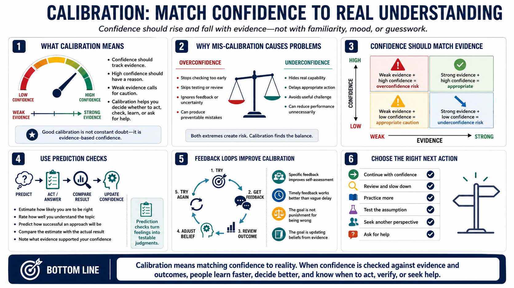

Calibration and Confidence
Connecting to LMS... Progress: in progress

Narration
Calibration means matching confidence to actual knowledge, skill, accuracy, or likelihood. Good calibration does not mean always being uncertain. It means confidence rises and falls with evidence. If you are highly confident, you should be able to point to why. If evidence is weak, confidence should be more cautious. Calibration helps people decide when to act, check, learn, or ask for help.
Overconfidence is risky because it can stop checking too early. A person may skip testing, ignore feedback, or dismiss uncertainty because the answer feels obvious. Underconfidence is also a problem. It can prevent people from using real capability, taking appropriate action, or accepting useful challenge. Both problems distort performance because confidence no longer matches what the person can actually do.
Prediction checks are a simple calibration tool. Estimate how likely an answer is, how well you understand a topic, or how successful an approach will be. Then compare the estimate with the result. Confidence ratings can also help. Before submitting an answer or making a decision, rate your confidence and note the evidence. Over time, you can see whether confidence is reliable.
Feedback loops improve calibration when they are specific and timely. The point is not to punish being wrong. The point is to update beliefs based on evidence. Accurate self-assessment improves learning and decision quality because it helps you choose the right next action: continue, review, practice, test, slow down, or bring in another perspective.